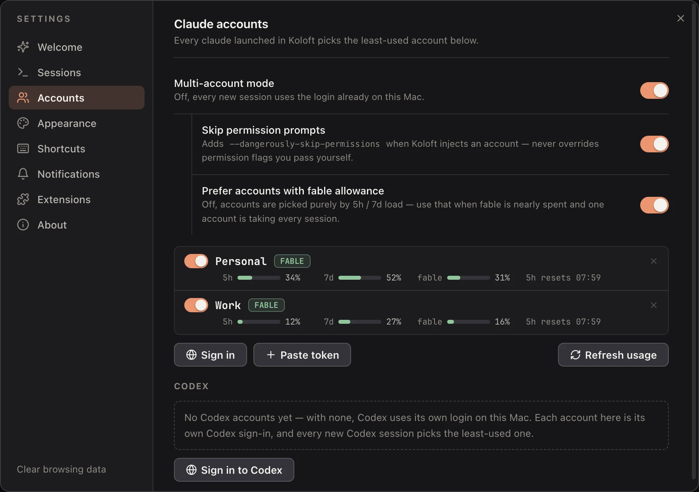

Several accounts, one pool
When several agents work at once, one subscription runs out fast. Then you stop, log out, log in to another one, and start again. Koloft keeps your accounts in one pool, and each new session starts on the one with the most room left.

Claude
Turn on Settings ▸ Accounts ▸ Multi-account mode, then add your subscription accounts.
Sign in runs the official claude setup-token for you in the background. You
approve once in your browser, and the token goes straight into the pool. Or paste a token
you already have.
You can also add an API (application programming interface) key, or a custom endpoint: another server that speaks the same API. Koloft cannot read how much is left on those, so it uses them only when every subscription is out and none comes back within 30 minutes, or when you have none.
a new Claude session starts
|
v
any subscriptions? -- no ----+
| yes |
v |
any with room now, or |
back in 30 minutes? -- no ---+
| yes |
v v
the one with API key or
the most room custom endpoint
- Koloft checks each account's limits as a session starts; a reading from the last 30 seconds is reused
- with "Prefer accounts with fable allowance" on, an account that still has fable allowance wins first
- if no account can be read, Koloft picks the next one in order
- tokens and keys are kept in the macOS Keychain
- the top bar shows how much room your Claude accounts have left
- with the mode on but no accounts added, a session you start uses the login already on this Mac; a scheduled job does not start
Codex
Sign in to Codex runs codex login in a terminal tab. Each sign-in becomes its
own Codex home, a folder that holds that one login. New Codex sessions start on the
least-used one. Each account's use, for each limit Codex reports (such as 5 hours and a
week), shows in Settings.
With the mode off
Sessions run a plain claude or codex, on whatever login this Mac
already has. Nothing is picked for you.
Your own accounts
The pool is for your own accounts. Please check that the way you use them fits Anthropic's and OpenAI's terms. That is between you and them.
next page -> Remote folders